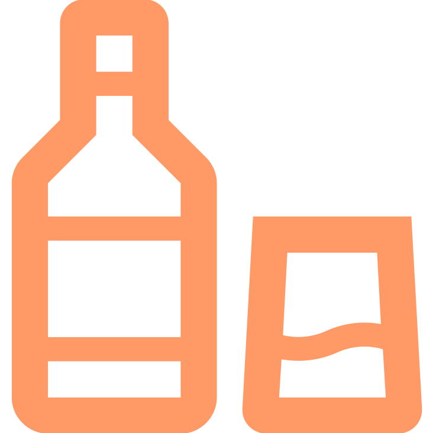

@if(isFomenuRoute()){
<header>
    <div class="header-kozepen">
        <div class="header-valami">
            <div class="header-kozep-sor">
                <div class="logo-header">
                    <div class="full-size">
                        <a mat-list-item routerLink="/fomenu" routerLinkActive="activate-list-item"></a>
                    </div>
                    <div class="mobil-logo">
                        <a mat-list-item routerLink="/fomenu" routerLinkActive="activate-list-item"></a>
                    </div>
                </div>
                    <div class="searching-bar">
                        <mat-form-field class="form-search" appearance="outline">
                            <mat-label>Keresés</mat-label>
                            <input matInput type="search" name="kereses" />
                            <button class="keresogomb" mat-icon-button matSuffix>
                                <mat-icon style="font-size: 24px;">search</mat-icon>
                            </button>
                        </mat-form-field>
                    </div>  
                <div class="top-nav2">
                    <div class="hamburger-kategoriak">
                        <input id="menu-toggle" type="checkbox">
                        <label class='menu-button-container' for="menu-toggle">
                            <mat-icon class="large-icon">menu</mat-icon>
                        </label>
                        <ul class="header-ul">
                            <li><a mat-list-item routerLink="/uditok" routerLinkActive="activate-list-item">Üdítők</a></li>
                            <li><a mat-list-item routerLink="/alkoholos" routerLinkActive="activate-list-item">Alkoholos Italok</a></li>
                            <li><a mat-list-item routerLink="/kulonleges" routerLinkActive="activate-list-item">Különleges Italok</a></li>
                            <li><a mat-list-item routerLink="/receptek" routerLinkActive="activate-list-item">Receptek</a></li>
                            <li><a mat-list-item routerLink="/kosar" routerLinkActive="activate-list-item">Kosár</a></li>
                            @if(isLoggedIn()){
                                <li><a mat-list-item routerLink="/profil" routerLinkActive="activate-list-item">Profil</a></li>
                            }
                            @else {
                                <li><a mat-list-item routerLink="/bejelentkezes" routerLinkActive="activate-list-item">Bejelentkezés</a></li>
                            }
                            @if(isAdmin()){
                                <li><a mat-list-item routerLink="/admin" routerLinkActive="activate-list-item">Szerkesztői felület</a></li>
                            }
                        </ul>
                    </div>
                </div>
                <div class="login-header">
                    @if(isLoggedIn()){
                        <a mat-list-item routerLink="/profil" routerLinkActive="activate-list-item"><mat-icon class="large-icon">account_circle</mat-icon></a>
                    }
                    @else {
                        <a mat-list-item routerLink="/bejelentkezes" routerLinkActive="activate-list-item"><mat-icon class="large-icon">account_circle</mat-icon></a>
                    }
                </div>
                <div class="cart-header">
                    <a mat-list-item routerLink="/kosar" routerLinkActive="activate-list-item"><mat-icon class="large-icon">shopping_bag</mat-icon></a>
                </div>
                @if(isAdmin()){
                    <div class="cart-header">
                        <a mat-list-item routerLink="/admin" routerLinkActive="activate-list-item"><mat-icon class="large-icon">admin_panel_settings</mat-icon></a>
                    </div>
                }
            </div>
        </div>
    </div> 
</header>
<nav class="header-kategoriak-kozepen" id="top-nav">
    <div class="header-kategoriak">
        <ul class="header-og">
            <li><a mat-list-item routerLink="/uditok" routerLinkActive="activate-list-item">Üdítők</a></li>
            <li><a mat-list-item routerLink="/alkoholos" routerLinkActive="activate-list-item">Alkoholos Italok</a></li>
            <li><a mat-list-item routerLink="/kulonleges" routerLinkActive="activate-list-item">Különleges Italok</a></li>
            <li><a mat-list-item routerLink="/receptek" routerLinkActive="activate-list-item">Receptek</a></li>
        </ul>
    </div>
</nav>}
<router-outlet/>
@if(isFomenuRoute()){
<footer class="footer">
    <div class="footer-container">
        <div class="row">
            <div class="footer-bal">
                <h2>Elérhetőségek</h2>
                <ul>
                    <li>Közpönti telefonos ügyfélszolgálat<br>Hétköznap: 8:00-16:00</li>
                    <li><mat-icon class="telefonos">call</mat-icon> <a href="tel:+4206969420">+42 0 6969 420</a> </li>
                    <li>Mobilos ügyfélszolgálat<br>Hétköznap: 8:00-16:00</li>
                    <li><mat-icon class="telefonos">call</mat-icon> <a href="tel:+36306969696">+36 30 696 9696</a></li>
                    <li>E-mail címünk:</li>
                    <li><mat-icon class="telefonos">mail</mat-icon><a href="mailto:h378025@stud.u-szeged.hu">h378025&#64;stud.u-szeged.hu</a></li>
                </ul>
            </div>
            <div class="footer-kozep">
                <h2>Információk</h2>
                <ul>
                    <li class="alahuzas">Szállítás:</li>
                    <li>Csak szegedi vásárlók rendelését fogadjuk, amely az SZTE Irinyi Épület munkatársai szállítanak ki.</li>
                    <li class="alahuzas">Fizetés:</li>
                    <li>Webshopunkon bankkártyás, illetve utánvétes fizetés lehetséges.</li>
                </ul>
            </div>
            <div class="footer-jobb">
                <h2>Üzletünket itt találod!</h2>
                <iframe src="https://www.google.com/maps/embed?pb=!1m18!1m12!1m3!1d487.75727629285535!2d20.147038353413176!3d46.24681193212446!2m3!1f0!2f0!3f0!3m2!1i1024!2i768!4f13.1!3m3!1m2!1s0x4744886557ac1407%3A0x8ef6cdceb30443a2!2sSzegedi%20Tudom%C3%A1nyegyetem%20Irinyi%20%C3%A9p%C3%BClet!5e0!3m2!1shu!2shu!4v1710548948604!5m2!1shu!2shu"></iframe>
            </div>
        </div>
    </div>
</footer>}
